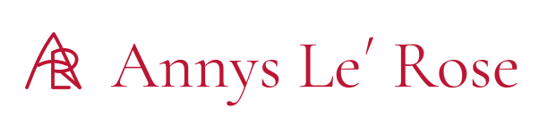
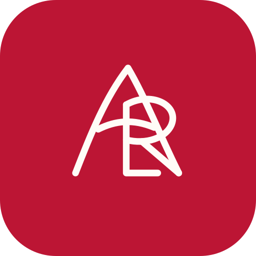
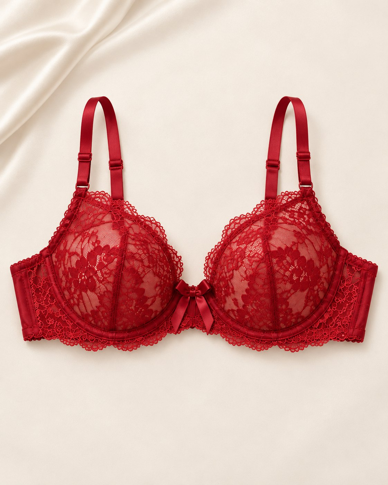
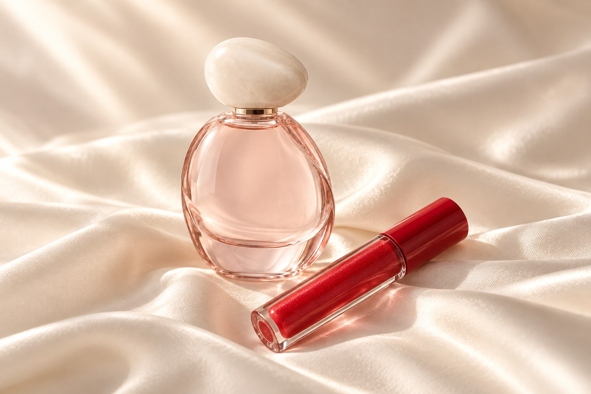

On ivory

Download signature · SVGANNYS LE´ ROSE · BRAND STUDIO
Lace, scent and gloss. An intimate world taking shape around the freedom to feel feminine your own way.
Identity v1 · Working direction01 · OUR STARTING POINT
A quiet morning. Getting ready for yourself. A detail you choose to keep close. We are building Annys Le´ Rose around those moments: femininity as personal expression, without a part to play.
A shared reference for the next stage. Products, fit, materials and packaging still need physical validation; this identity has not been finalized.
Explore the proposed capsule02 · A SIGNATURE OF OUR OWN
A curved A opens like a petal. The L and R share a stem. A simple gesture, designed to carry the same identity from a label to a screen.

Download signature · SVG
Download signature · SVGFor labels, packaging and personal details.
Download symbol · SVGThe same gesture at browser size.
Download favicon · SVG
A visual direction for the planned app.
Download icon · SVGKeep the symbol in one color, give it breathing room and preserve its proportions.
Leave clear space of at least one quarter of the symbol’s height around the symbol or full signature. Keep type, trim and other artwork outside this area.
For screens, start at 32 px for the standalone symbol and 180 px wide for the full signature. Use the favicon asset at 16–32 px. These are working guides; test each actual size before release.
For print and embroidery, request a physical proof. Fine strokes may need a dedicated production version.
03 · OUR COLOR STORY
Cherry leads. Ivory makes space. Blush, rose and champagne bring warmth, while deep ink keeps every word clear.
Ivory is the everyday canvas. Cherry marks the signature, key actions and occasional statement panels.
Blush, rose and champagne support backgrounds and accents. Use deep ink for reading; keep pale tones out of small text.
Editorial headlines and the signature. Expressive, graceful, with room to breathe.
Navigation, product details and everyday reading. A clear companion to the expressive serif.
Typeface references and licenses: Cormorant Garamond · Manrope
One expressive headline, then clear information. Use serif for titles, Manrope for body copy and controls, and spaced capitals only for short labels. Keep essential details out of images.
Download identity reference · JSON04 · THE WAY WE SPEAK
We speak to you with warmth and clarity. Your choices, your comfort and your way of being feminine lead the conversation.
“Find your own ritual.” A clear invitation to make it personal.
Use simple words for fit, shade and format. Be clear about what is a concept and what is confirmed.
Soft, bold, quiet or expressive. There is room for every side of you.
English leads; Spanish carries the same warmth and clarity. Translate the meaning, then check every action and product detail.
“A moment, just yours.”
“Un momento, solo tuyo.”
“A first look at Rose. Materials and fit are still in development.”
“Un primer vistazo a Rose. Los materiales y el ajuste siguen en desarrollo.”
Speak about choice and expression. Avoid body-correction language, pressure to be desirable and promises about comfort or performance that have not been tested.
Your own kind of feminine.
05 · THE IDENTITY, IN YOUR HANDS
A quiet label, a cherry box, a small signature on glass. These design studies show how the same identity could move between intimates and beauty.
Label study · Ivory ground, cherry signature. Keep care and size information on a separate, readable label.
Box study · Cherry outside, an ivory signature and space around it. Final materials and finish remain to be sampled.
Bottle study · An uncluttered front with the ALR symbol. A design direction, not a confirmed formula or container.
Concept illustrations only. These are not production files or photographs of manufactured goods.

A CONSISTENT VISUAL LANGUAGE
Warm daylight, generous ivory space and a single cherry accent. Show the whole item clearly before moving closer to texture. Editorial images should feel unhurried and personal.
Current catalog images are concepts. Before selling, photograph the actual samples, their construction and colors. On-person photography should represent adult women across body types, without reshaping their bodies.
06 · THE NEXT CHAPTER
An early visual direction for the planned Annys Le´ Rose app. The signature, personal rituals and Édition 05 share one intimate space.
Visual concept only. The app and its features are still to be developed.
Explore the conceptsYOUR PERSONAL RITUAL

Dates to be announced